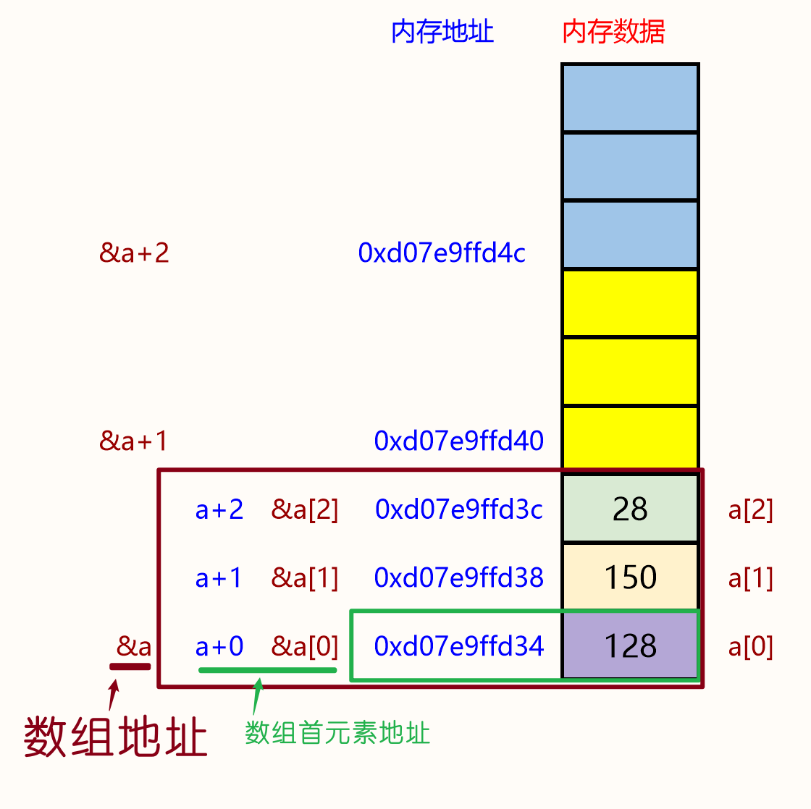
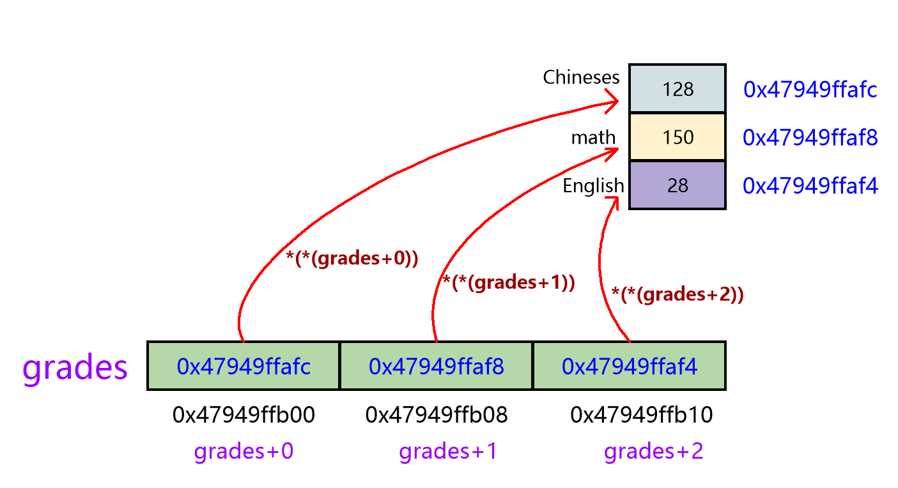

<!DOCTYPE lake>
<h1 data-lake-id="RGSxo" id="RGSxo"><span class="lake-fontsize-14" data-lake-id="u49d51219" id="u49d51219">1&gt;  </span><span class="lake-fontsize-14" data-lake-id="ua1ea2ef2" id="ua1ea2ef2" style="color: #117CEE">数组首元素</span><span class="lake-fontsize-14" data-lake-id="u321eacfe" id="u321eacfe">的地址 与 </span><span class="lake-fontsize-14" data-lake-id="ud53db1d5" id="ud53db1d5" style="color: #117CEE">数组</span><span class="lake-fontsize-14" data-lake-id="ud7da3912" id="ud7da3912">地址 </span></h1><span class="yuque-card-unsupported">[codeblock]</span><p data-lake-id="u70d043ba" id="u70d043ba"></p><p data-lake-id="ub119e232" id="ub119e232"><span data-lake-id="u4be9e778" id="u4be9e778">分析结果：</span></p><p data-lake-id="ueb7fee9b" id="ueb7fee9b"><span data-lake-id="uee542068" id="uee542068">打印出的值一样， </span></p><p data-lake-id="uc3e7acbf" id="uc3e7acbf" style="padding-left: 2em"><span data-lake-id="ud0d037c3" id="ud0d037c3">说明数组首元素的地址，与数组的地址</span><strong><span data-lake-id="u42f7bc09" id="u42f7bc09">值</span></strong><span data-lake-id="ue755e0ad" id="ue755e0ad">是一样；</span></p><p data-lake-id="ucb6979a4" id="ucb6979a4"><span data-lake-id="u9d2f024c" id="u9d2f024c">报警类型不匹配，</span></p><p data-lake-id="u7781a747" id="u7781a747" style="text-indent: 2em"><span data-lake-id="uc66efadf" id="uc66efadf">因为 int *p； 指针变量p，指向的是int型的变量，</span></p><p data-lake-id="u86f23f22" id="u86f23f22" style="text-indent: 2em"><span data-lake-id="u9a97ab0d" id="u9a97ab0d">而&amp;a得到的是真个数组的地址，他需要的是能指向整个数组的指针变量；          </span></p><a class="yuque-card-link" href="https://cdn.nlark.com/yuque/0/2024/jpeg/43021193/1725846059330-5cd331db-1911-4e56-abda-197203689dc5.jpeg" rel="noopener noreferrer" target="_blank">board：board</a><p data-lake-id="u8be08c1c" id="u8be08c1c"><br/></p><p data-lake-id="u3e06320a" id="u3e06320a"><br/></p><p data-lake-id="u155b40fa" id="u155b40fa"><br/></p><h1 data-lake-id="mg9DJ" id="mg9DJ"><span data-lake-id="ufb7296ed" id="ufb7296ed">2&gt; 指针数组</span></h1><p data-lake-id="uf041e88b" id="uf041e88b"><span data-lake-id="ucac81752" id="ucac81752">指针</span><strong><span data-lake-id="u2f186868" id="u2f186868" style="color: #DF2A3F">数组：</span></strong><span data-lake-id="u9de05c30" id="u9de05c30" style="color: #000000">是一个数组，数组中的元素全部是指针变量；</span></p><p data-lake-id="u96fa8a97" id="u96fa8a97"><span data-lake-id="u4dd69ad9" id="u4dd69ad9" style="color: #000000">数组</span><strong><span data-lake-id="u8a67868e" id="u8a67868e" style="color: #DF2A3F">指针</span></strong><span data-lake-id="u692463db" id="u692463db" style="color: #000000">：是一个指针变量，这个指针变量指向数组；</span></p><h3 data-lake-id="Ayq2P" id="Ayq2P"><span data-lake-id="ufa2ab67b" id="ufa2ab67b">定义指针数组</span></h3><span class="yuque-card-unsupported">[codeblock]</span><p data-lake-id="ufbce74e6" id="ufbce74e6"><strong><span class="lake-fontsize-12" data-lake-id="u5210e89e" id="u5210e89e" style="color: #DF2A3F">分析技巧：</span></strong></p><p data-lake-id="u18c417d6" id="u18c417d6"><span data-lake-id="uada0bf05" id="uada0bf05">1-找核心（主语），“不想当裁缝的厨子不是好</span><strong><span data-lake-id="u021ec3d9" id="u021ec3d9" style="color: #117CEE">司机</span></strong><span data-lake-id="ub38f3428" id="ub38f3428">”</span></p><p data-lake-id="u9f4692ca" id="u9f4692ca"><span data-lake-id="u99a2ed23" id="u99a2ed23"> 2- 向往结合，根据符号优先级，一层层向往结合；</span></p><h3 data-lake-id="HhhrE" id="HhhrE"><span data-lake-id="ud1606b3b" id="ud1606b3b">使用指针数组</span></h3><span class="yuque-card-unsupported">[codeblock]</span><p data-lake-id="u010042d7" id="u010042d7"><br/></p><p data-lake-id="u724c8b99" id="u724c8b99"></p><h3 data-lake-id="llcdv" id="llcdv"><span data-lake-id="u908769b9" id="u908769b9">习题 </span></h3><p data-lake-id="u2f60d344" id="u2f60d344"><span data-lake-id="u09336a26" id="u09336a26"> 输入1~12月, 返回对应的月份名称；</span></p><span class="yuque-card-unsupported">[codeblock]</span><hr/><h1 data-lake-id="pJni4" id="pJni4"><span data-lake-id="u4a7fc331" id="u4a7fc331" style="color: #000000">3&gt; 数组指针</span></h1><span class="yuque-card-unsupported">[codeblock]</span><p data-lake-id="u5075dfef" id="u5075dfef"><span data-lake-id="u4408f035" id="u4408f035">示例:</span></p><span class="yuque-card-unsupported">[codeblock]</span>